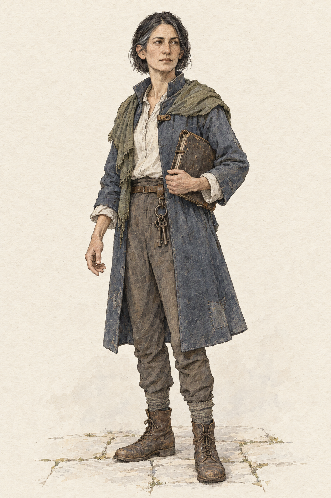
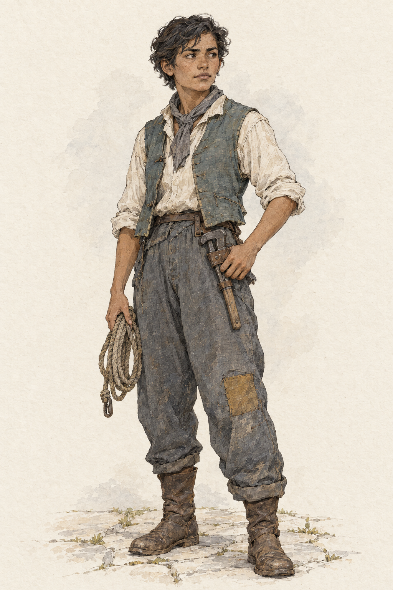
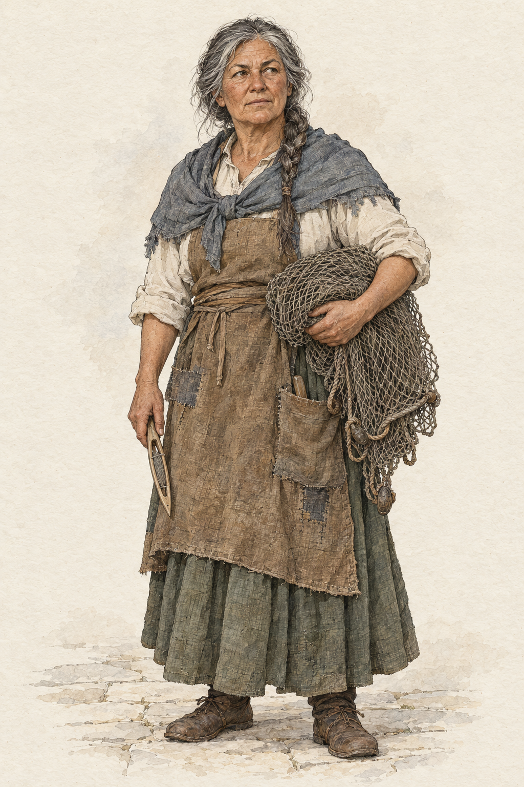
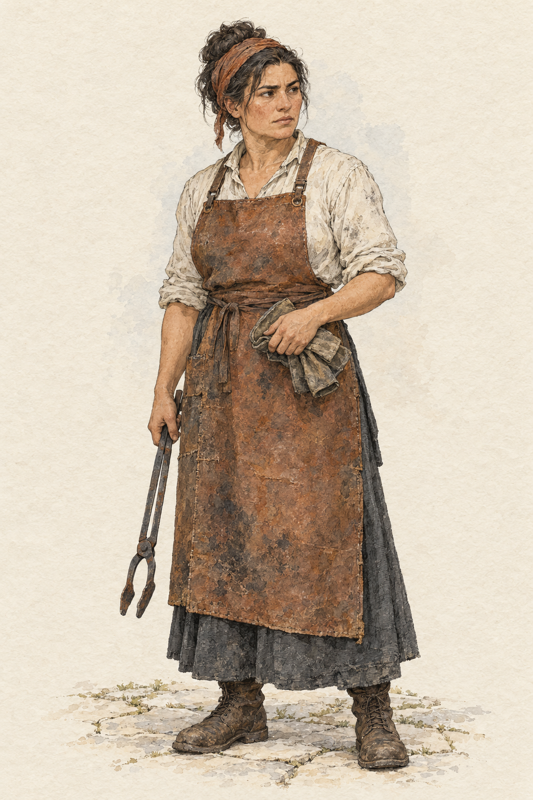
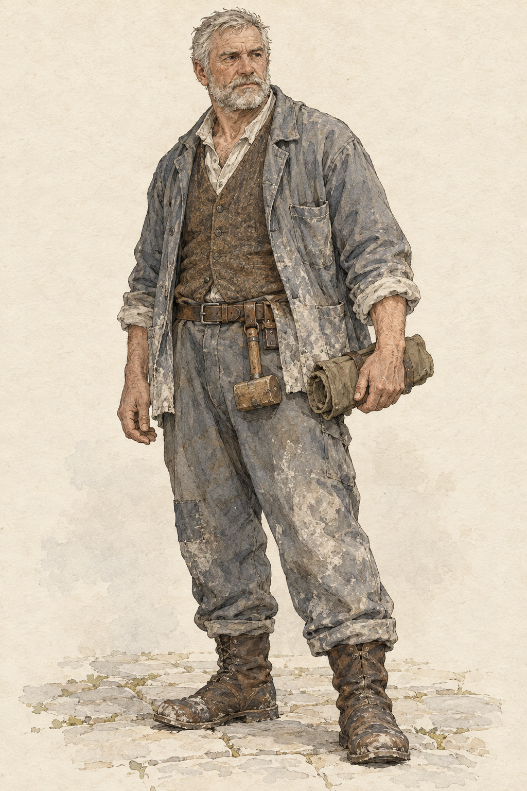

灰潮の入り江の人々
白い石と灰色の水のそばで働く5人。シーン画の筆致と配色を引き継ぎ、顔、服の形、手に持つ道具を描き分けました。
人物デザインの初稿です。各画像を今後の場面で参照し、同じ人物の外見をそろえるために使います。画像を選ぶと原寸で開けます。

鐘守イラ
港で粉の配分を担う。全員の暮らしを守りたい思いと、限られた手段の間に立つ。
青灰色の膝丈の上着、顎までの黒い髪、閉じた配分帳と小さな鍵束。
原寸を開く ↗
水門修理人スイ
低庭の雨水槽を残したい。水門や道の下を調べ、暮らしを支える設備に手を入れる。
短い波打つ髪、袖をまくった作業着、黄土色の膝の補修布と点検縄。
原寸を開く ↗
網職人アサ
次の漁へ向けて網を仕上げる。白い道は、美しい眺めであると同時に荷車を通す場所でもある。
灰色混じりの一本の三つ編み、灰青の肩布、畳んだ網と木の網針。
原寸を開く ↗
窯番ネネ
今便の納品を急ぐ窯番。窯の仕事を続ける判断と、自分の大切な記憶を差し出す判断を抱える。
まとめた濃い髪と錆色の頭布、長い革前掛け、折り畳んだ手袋と火ばさみ。
原寸を開く ↗
階段職人アド
石段の修繕仕事が減り、窯の夜勤で支柱を点検している。仕事への誇りが、疲れた足取りにも残る。
短い白髪と灰色の髭、石灰色の腰丈の上着、工具布と小さな木槌。
原寸を開く ↗